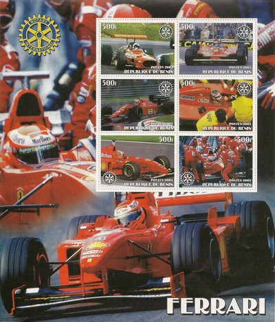

Benin
 |
 Issue date: 2007 A 4 stamp sheet featuring Lewis Hamilton (and a BMW F1 Car!). It was announced prior to the start of the 2007 season that Lewis Hamilton would be partnering double World Champion Fernando Alonso. On his debut at the Australian Grand Prix, Hamilton qualified fourth and finished third in the race, becoming the thirteenth driver to finish on the podium in his first F1 career race. In Bahrain, Hamilton got his first front-row start, qualifying and finishing second behind Felipe Massa. Hamilton again finished second behind Massa in the Spanish Grand Prix, to take the lead in the drivers championship. This meant that Hamilton broke Bruce McLaren's record of being the youngest driver to ever lead the world championship. Hamilton finished second behind Alonso at Monaco and afterwards suggested he was prevented from racing his team mate. The FIA cleared McLaren following an investigation. Hamilton had both his first pole position and first victory of his F1 career in the Canadian Grand Prix at Montreal. He led for most of the race even after the safety car was deployed four times increasing the chances of him being overtaken. A week later Hamilton won the United States Grand Prix, also from pole position, becoming the first Briton since John Watson in 1983 to win an F1 race in the US, and only the second person, after Jacques Villeneuve, to win more than one race in his rookie F1 season since the first year of the Championship. Following further race wins at the Hungarian and Japanese Grand Prix, Hamilton came second to the drivers championship to Kimi Raikkonen (Ferrari) by 1 point. Hamilton had the same number of points as Alsono (109), but was classified ahead of Alonso. McLaren would have won the constructors title, but were stripped of all of their points due to the espionage scandal between them and Ferrari. Ahead of the world championship finale in Brazil, Hamilton answered a question about what it would mean to him to become the first black champion, saying: "It will show that not only white people can do it, but also black people, Indians, Japanese and Chinese. It will be good to mean something." Having made few public remarks about his ethnicity since becoming an F1 driver, Hamilton added: "Outside of Formula One my heroes are foremost my father, then Nelson Mandela and Martin Luther King. Being black is not a negative. It's a positive, if anything, because I'm different. In the future it can open doors to different cultures and that is what motor sport is trying to do anyway".  Issue date: 2003 A sheet of six values featuring various Ferrari F1 cars.  Issue date: 2002 A sheet of six values featuring various Ferrari F1 cars.  Issue date: 2008 A mini sheet of two values featuring Damon Hill and Kimi Raikkonen. Damon Hill raced in F1 from 1992 to 1999, driving for Brabham, Williams, Arrows and Jordan - Hill was runner up in the driver's championship in 1994 and 1995 and then he finally clinched the title in 1996 with Williams. Kimi Raikkonen raced in F1 from 2001 to 2009, driving for Sauber, McLaren and Ferrari - Raikkonen was twice runner up in the driver's championship with McLaren, but became world champion after his move to Ferrari in 2007. Issue date: 2008 A mini sheet of two values featuring Michael Schumacher and Mika Hakkinen. Michael Schumacher raced in F1 from 1991 to 2006 and then returned in 2010, driving for Jordan, Benetton, Ferrari and Mercedes - Schumacher won the driver's title twice with Benetton and five times with Ferrari. Mika Hakkinen raced in F1 from 1991 to 2001, driving for Lotus and McLaren - Hakkinen won the driver's championship twice with McLaren in 1998 and 1999.  Issue date: 2008 A mini sheet of two values featuring Ayrton Senna and Alain Prost. Ayrton Senna raced in F1 from 1984 to 1994, driving for Toleman, Lotus, McLaren and Williams - Senna won the driver's championship three times with McLaren in 1988, 1990 and 1991. Alain Prost raced in F1 from 1980 to 1993, driving for McLaren, Renault, Ferrari and Williams - Prost won the driver's championship four times 1985, 1986, 1989 (McLaren) and 1993 (Williams). Issue date: 2015 The FW37 was Williams' car for the 2015 season. This was the first car to be presented for the 2015 season as Williams released a computer rendering on 21st January. The car proved to be reasonably competitive, scoring points in most races - driven by Felipe Massa and Valtteri Bottas the team secured third place in the constructors' championship. The team retained the Martini alcohol brand as their main sponsor, thereby keeping the car in the traditional Martini Racing colours.  Issue date: 2015 The RB11 was Red Bull's car for the 2015 season. It was designed by Adrian Newey and was the last car with engines badged as 'Renault'. Issue date: 2015 The Ferrari SF15-T was Ferrari's car for the 2015 season. Carrying on his tradition of naming his cars, Sebastian Vettel named his SF15-T 'Eva'. This car proved to be the only serious challenger to the dominant Mercedes team in 2015, and Ferrari finished second in the constructors' championship, a marked improvement on the previous years performance.  Issue date: 2015 The Mercedes F1 W06 Hybrid totally dominated the 2015 season in the hands of Lewis Hamilton and Nico Rosberg. In fact this car is statistically the most dominant car in the history of F1. There were minimal design changes from the previous season's car, Lewis Hamilton declared that 'it is difficult to pick up any differences'. It was an evolutionary design, the main changes being to comply with the changes in the regulations.  Issue date: 2015 A mini sheet of stamps featuring the following cars from the 2015 F1 Season: - Red Bull RB11 - Williams Martini FW37 - Ferrari SF15-T  Issue date: 2014 Lella Lombardi is the only female in F1 history to have a top six finish in a World Championship race. This was achieved at the 1975 Spanish Grand Prix in a March 751 - half points were awarded for this race as the distance was shortened. Lombardi competed in F1 from 1974 to 1976 driving for various teams - in her career she drove the Brabham BT42, BT44B, March 741, 751 and 761 and the Williams FW04. Only two female drivers have qualified for a F1 race. |